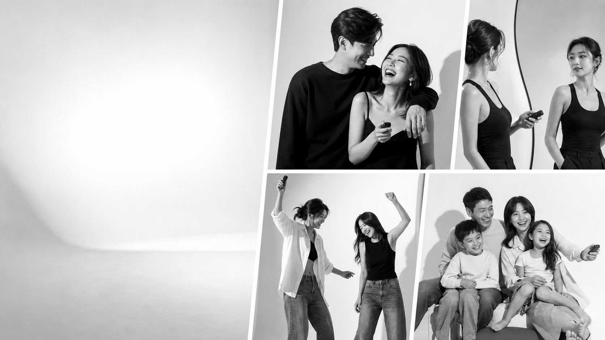

Вы сами нажимаете пульт.Свет уже настроен.
Self-photo студия без фотографа в зале. Приходите вдвоем, семьей или компанией до 4 человек, снимайте себя сами и получайте черно-белую галерею через 10-30 минут.

Бронируете время
Выбираете слот на сайте. Один визит длится 45 минут.
Берете пульт
Администратор объясняет процесс, а дальше момент выбираете вы.
Снимаете себя сами
В зале нет фотографа. Только вы, зеркало, свет и камера.
Получаете галерею
Ссылка с фотографиями приходит через 10-30 минут после съемки.
Черно-белый свет вместо неловкой фотосессии.
На старте фон один светлый. Темный сценарий появляется через инверсию и обработку, если тесты подтвердят красивый результат. Визуальный фокус - лица, движение, жесты и живые кадры.
Не только фотосессия. Маленькое событие.
Свидание
45 минут вдвоем без фотографа и неловкости перед камерой.
День рождения
Зайдите до праздника, после кафе или вместо фотозоны.
После ЗАГСа
Спокойные портреты без большой съемочной команды.
Семья
Портрет с детьми, родителями, бабушками и дедушками.
Подруги
Девичник, прогулка, контент и кадры, где можно быть живыми.
Профиль
Фото для соцсетей, сайта, резюме или личного архива.
5000 ₽ за слот, не за человека.
Это премиальный для Рыбинска вход, поэтому сайт честно объясняет ценность: приватность, свет, камера, обработка, скорость и до 4 человек в цене.
Подарок, который человек проживает сам.
Сертификат равен одной базовой сессии: 45 минут, до 4 человек, черно-белая галерея и приватный зал без фотографа.
Можно оформить день-в-день. Срок действия предлагается 1 год, финально закрепим в правилах.
Оставить заявкуВопросы, которые лучше закрыть до записи.
Запись откроется после выбора помещения.
Сейчас можно оставить заявку на ранний список: съемка для себя, сертификат, день рождения, пара или семейный портрет.